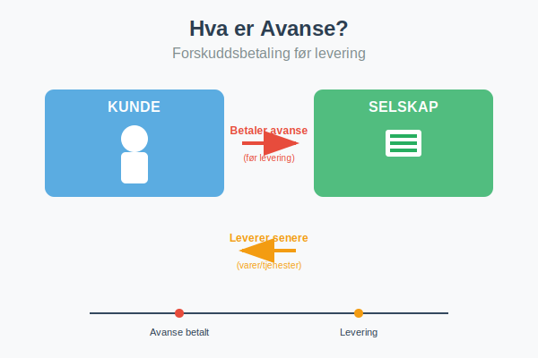
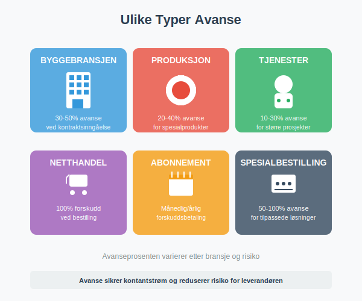
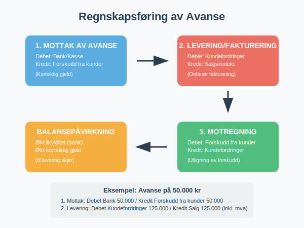

Avanse er en forskuddsbetaling som kunden betaler til leverandøren før varer eller tjenester leveres. Dette er en vanlig forretningspraksis som sikrer kontantstrøm for leverandøren og reduserer risiko ved større prosjekter eller spesialbestillinger.

Hva er Avanse?
Avanse, også kalt forskuddsbetaling eller depositum, er et beløp som kunden betaler på forhånd før leverandøren har levert varene eller utført tjenestene. Dette skiller seg fra ordinær fakturering hvor betaling skjer etter levering.
Avanse brukes særlig når:
- Leveringstiden er lang: Som i byggebransjen eller ved produksjon av spesialtilpassede produkter
- Investeringskostnadene er høye: Leverandøren trenger kapital til å kjøpe materialer eller starte produksjon
- Kunden er ukjent: For å redusere kredittrisiko ved nye kunder
- Prosjektet er stort: Ved omfattende prosjekter som krever betydelige ressurser
Ulike Typer Avanse
Avansepraksis varierer betydelig mellom bransjer og typer av transaksjoner:

Bransjespesifikke Avanseprosenter
| Bransje | Typisk Avanseprosent | Begrunnelse |
|---|---|---|
| Byggebransjen | 30-50% | Høye materialkostnader og lang byggetid |
| Produksjon | 20-40% | Spesialtilpassede produkter og råvarekostnader |
| Tjenester | 10-30% | Større prosjekter med betydelig tidsbruk |
| Netthandel | 100% | Betaling ved bestilling før forsendelse |
| Abonnement | 100% | Månedlig eller årlig forskuddsbetaling |
| Spesialbestilling | 50-100% | Høy risiko og tilpassede løsninger |
Fordeler med Avanse
For Leverandøren (Selgeren)
Økonomiske fordeler:
- Forbedret kontantstrøm: Penger kommer inn før utgifter til produksjon
- Redusert kredittrisiko: Mindre risiko for tap ved kundens betalingssvikt
- Finansiering av prosjektet: Kundens penger finansierer deler av produksjonen
- Lavere finansieringskostnader: Mindre behov for arbeidskapital fra bank
Operasjonelle fordeler:
- Sikret kundeengasjement: Kunden er mer forpliktet til kjøpet
- Planleggingssikkerhet: Lettere å planlegge produksjon og ressurser
- Kvalitetssikring: Tid til å levere høy kvalitet uten tidspress
For Kunden (Kjøperen)
Potensielle fordeler:
- Prioritert behandling: Ofte raskere levering ved forskuddsbetaling
- Prisrabatt: Noen leverandører gir rabatt for forskuddsbetaling
- Sikret levering: Garantert plass i produksjonskøen
- Budsjettmessig forutsigbarhet: Kjent kostnad på forhånd
Regnskapsføring av Avanse
Korrekt regnskapsføring av avanse er viktig for både leverandør og kunde. Prosessen følger spesifikke regnskapsregler:

For Leverandøren (Mottar Avanse)
Ved mottak av avanse:
Debet: Bank/Kasse 50.000
Kredit: Forskudd fra kunder 50.000
Avansen føres som kortsiktig gjeld i balansen fordi leverandøren har en forpliktelse til å levere varer eller tjenester.
Ved levering og fakturering:
Debet: Kundefordringer 125.000
Kredit: Salgsinntekt 100.000
Kredit: Utgående merverdiavgift 25.000
Ved motregning av forskudd:
Debet: Forskudd fra kunder 50.000
Kredit: Kundefordringer 50.000
For Kunden (Betaler Avanse)
Ved betaling av avanse:
Debet: Forskudd til leverandører 50.000
Kredit: Bank 50.000
Ved mottak av faktura:
Debet: Varekjøp/Tjenestekjøp 100.000
Debet: Inngående merverdiavgift 25.000
Kredit: Leverandørgjeld 125.000
Ved motregning:
Debet: Leverandørgjeld 50.000
Kredit: Forskudd til leverandører 50.000
Skattemessige Konsekvenser
Merverdiavgift (MVA)
For leverandøren:
- Ingen MVA-plikt ved mottak: MVA påløper først ved levering av varer/tjenester
- Ordinær MVA-behandling: Ved fakturering følges normale MVA-regler
- Kontantmetodefordel: Bedre likviditet siden MVA betales senere
For kunden:
- Ingen MVA-fradrag ved forskudd: Fradrag først når faktura mottas
- Ordinært fradrag: Ved fakturering kan inngående MVA trekkes fra som normalt
Inntektsskatt
Leverandøren:
- Ingen skatteplikt ved mottak: Inntekt regnskapsføres først ved levering
- Periodisering: Følger regnskapsmessig periodisering av inntekt
- Kontantstrømfordel: Skatten påløper senere enn kontantstrømmen
Juridiske Aspekter og Avtaler
Avanseavtaler
En god avanseavtale bør inneholde:
Grunnleggende vilkår:
- Avansens størrelse: Prosent eller fast beløp
- Betalingsfrister: Når avansen skal betales
- Leveringsfrister: Når levering skal skje
- Spesifikasjoner: Detaljert beskrivelse av varer/tjenester
Sikkerhet og garantier:
- Avansesikkerhet: Bankgaranti eller forsikring for avansen
- Depositum: Kontant sikkerhet for kontraktoppfyllelse
- Leveringsgaranti: Sikkerhet for at levering skjer som avtalt
- Kvalitetsgaranti: Standarder for leveransen
- Forsinkelsesklausuler: Konsekvenser ved forsinket levering
Misligholdsbestemmelser:
- Kundens mislighold: Hva skjer hvis kunden ikke betaler restbeløp
- Leverandørens mislighold: Tilbakebetaling av avanse ved manglende levering
- Heving av avtale: Vilkår for å heve avtalen
- Erstatningsansvar: Ansvar for tap ved kontraktsbrudd
Forbrukerrettigheter
Ved salg til forbrukere gjelder spesielle regler:
- Angrerett: 14 dagers angrerett ved fjernsalg og salg utenfor fast utsalgssted
- Avansebegrensning: Begrenset adgang til å kreve avanse fra forbrukere
- Tilbakebetalingsplikt: Rask tilbakebetaling ved utøvelse av angrerett
- Informasjonsplikt: Klar informasjon om avansens størrelse og vilkår
Praktiske Eksempler
Eksempel 1: Byggeprosjekt
Situasjon: Byggefirma skal bygge garasje for 400.000 kr ekskl. MVA
Avanseavtale:
- Avanse: 40% = 160.000 kr
- Betaling ved kontraktsinngåelse
- Restbetaling ved ferdigstillelse
Regnskapsføring hos byggefirma:
Ved mottak av avanse:
Debet: Bank 200.000
Kredit: Forskudd fra kunder 160.000
Kredit: Utgående MVA 40.000
Ved ferdigstillelse og fakturering:
Debet: Kundefordringer 300.000
Kredit: Byggekontrakter 240.000
Kredit: Utgående MVA 60.000
Debet: Forskudd fra kunder 200.000
Kredit: Kundefordringer 200.000
Eksempel 2: Spesialproduksjon
Situasjon: Maskinprodusent skal lage spesialtilpasset utstyr for 800.000 kr
Avanseavtale:
- 50% avanse ved bestilling = 400.000 kr
- 25% ved dellevering = 200.000 kr
- 25% ved ferdigstillelse = 200.000 kr
Fordeler for produsent:
- Finansiering av råvarer og arbeidskraft
- Redusert risiko ved spesialtilpasning
- Sikret kundeengasjement
Fordeler for kunde:
- Prioritert produksjon
- Mulighet for endringer underveis
- Kvalitetssikring gjennom oppfølging
Risikohåndtering
For Leverandøren
Kredittvurdering:
- Sjekk kundens kredittverdighet før avtale
- Krev referanser ved større prosjekter
- Vurder kredittforsikring ved høye beløp
Kontraktssikring:
- Detaljerte leveringsvilkår
- Klare betalingsfrister
- Forsinkelsesrenter ved sen betaling
Operasjonell risiko:
- Realistiske leveringsfrister
- Kvalitetskontroll underveis
- Reserveplaner ved problemer
For Kunden
Leverandørvurdering:
- Sjekk leverandørens soliditet og referanser
- Vurder tidligere leveranser og kvalitet
- Kontroller forsikringer og garantier
Avansesikring:
- Krev bankgaranti for større avansbeløp
- Vurder avanseforsikring
- Begrens avansens størrelse når mulig
Kontraktsikring:
- Klare leveringsfrister med sanksjoner
- Detaljerte spesifikasjoner
- Rett til inspeksjon underveis
Alternativer til Avanse
Remburs (Letter of Credit)
- Banksikret betaling: Banken garanterer betaling ved levering
- Internasjonal handel: Vanlig ved import/eksport
- Redusert risiko: For begge parter
Bankgaranti
- Leveringsgaranti: Bank garanterer leverandørens forpliktelser
- Avansesikkerhet: Sikrer tilbakebetaling av avanse
- Kostnadseffektivt: Lavere kostnader enn avanse
Factoring
- Finansiering av fordringer: Selg fordringer til finansselskap
- Økt likviditet: Rask tilgang til kontanter
- Risikoovertakelse: Finansselskap overtar kredittrisiko
Digitale Løsninger og Fremtiden
Moderne Betalingsløsninger
Digitale plattformer:
- Escrow-tjenester som holder avansen til levering er godkjent
- Blockchain-baserte smarte kontrakter
- Automatisert utbetaling ved oppfylte vilkår
Integrerte systemer:
- Kobling mellom bestillingssystem og regnskapssystem
- Automatisk regnskapsføring av avanse
- Sanntidsrapportering av kontantstrøm
Regulatoriske Endringer
Økt forbrukerbeskyttelse:
- Strengere regler for avanse til forbrukere
- Krav til avansesikring i flere bransjer
- Bedre informasjonsplikt
Digitalisering:
- Elektroniske avtaler og signaturer
- Automatiserte betalingsprosesser
- Forbedret sporbarhet og kontroll
Konklusjon
Avanse er et viktig finansielt verktøy som gir fordeler for både leverandører og kunder når det brukes riktig. Korrekt regnskapsføring, juridisk sikring og risikohåndtering er avgjørende for vellykket bruk av avanse.
Viktige punkter å huske:
- Avanse forbedrer kontantstrøm og reduserer risiko for leverandøren
- Korrekt regnskapsføring som kortsiktig gjeld til levering skjer
- Detaljerte avtaler beskytter begge parter
- Bransjepraksis varierer betydelig
- Forbrukerrettigheter setter begrensninger
- Moderne teknologi gir nye muligheter for sikring
Ved å følge beste praksis for avanse kan bedrifter dra nytte av fordelene samtidig som de minimerer risikoen. Dette krever god forståelse av både regnskapsmessige, juridiske og praktiske aspekter ved forskuddsbetalinger.